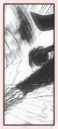
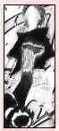

| » Techniques ;
The following is a list of all of Lee's techniques, with descriptions following the names. The list is arranged in the order they appear in the series. Side Note: some of the techniques have "Konoha" in the front. This is because Lee is a shinobi of the Konoha village. Konoha Reppuu (Leaf Violent Wind) A pretty basic attack, effortless for Lee to perform. Lee crouches on one leg, extends the other leg and swiftly spins in a circle, tripping the enemy. We first see this attack in chapter 37 (manga) and episode 22 (anime). Naturally, this attack will do more damage if paired up with other attacks, with chakra, or with increased speed. Konoha Senpuu (Leaf Spinning Wind) Lee probably uses this attack the most. It requires high speed to do any serious damage. It's a powerful technique in its unpredictability to the normal eye. Lee starts by using mostly his legs to do a series of spin kicks. Lee may appear to attack, but vanishes only to appear seconds later to attack elsewhere. It can also be used in a variety of ways, attacking in midair, multiple times alternating legs, etc. After the opponent is caught off guard by the unpredictability, Lee moves in and kicks the opponent in the chin, snapping the head back and shooting him upwards with incredible power. Lee uses this move twice in a row with Sasuke, once with and once without the sharingan. We also first see this attack in chapter 37 (manga) and episode 22 (anime). Sasuke copied and later used this attack in the Chuunin preliminaries to defeat his opponent. Omote Renge (Initial Lotus) This is one of the forbidden techniques Lee has up his sleeves. It's a double edged sword and can be self-damaging, and requires the opening of the first gate to greatly increase speed. Lee starts with Konoha Senpuu to get his opponent high up in the air. Then, he propels himself up behind the opponent, unwinds the bandages around his arms, binding his opponent and rendering him defenseless. He then aims straight down, spinning at rapid speed, slamming the opponent with brutal force, headfirst into the ground while leaping away at the last second. Lee first attempts this attack when he duals with Sasuke, but didn't actually use it until the dual with the Sound shinobi, in chapter (manga) and episode 31 (anime). Because the technique releases the brain's limiters with chakra, incredible speed is achieved at the expense of reaching close to the body's limit. After this move, Lee's body can barely move because of the muscle strain. So if this technique fails, Lee would be in trouble while waiting for his body to recover. Thus, Lee was told only to use forbidden techniques to protect people important to him as well as life or death situations. Ura Renge (Primary Lotus) Lee's ultimate attack. It requires the opening of three of the Eight Gates to release the body's limits. The eight gates are: Open, Energy, Life, Wound, Forest, View, Insanity, and Death. The more gates opened, the more chakra flow the body has. Opening the gates allow the chakra flow to increase at least tenfold, thus giving the user a massive amount of power as well as speed. Simply by preparing, muscle fibers are torn, while chakra and a fierce wind surrounds him. At his dual with Gaara, Lee opens not only three, but five gates for maximum chakra flow. Lee then uses Konoha Senpuu to send his opponent high up in the air, however with this kind of power, the surroundings are usually utterly destroyed with side shockwaves. After he gets the ideal height, Lee follows with a series of high speed blows. Finally, he unwraps one of his arm bandages, binds the user around the waist, and slams his arm and leg into him, towards the ground. This effect does double the damage, first with the arm/leg shock, then the ground impact. However, Lee would not be able to do so much as crawl after this move. This attack was only seen once, during chapter (manga) and episode 50 (anime). Drunken Fist (Suiken) A rather amusing style only achieved when the user is drunk. With all signs of drunkness, the user somehow still manages to attack efficiently. Not only that, this technique has an edge in unpredictablility, since the user is no longer moving in an uniformed manner. The technique also appears to increase speed. We first see this in chapter 210, when Lee fights Kimimaro and accidentally drinks sake, thinking it was his medicine. Iron Fist (Gouken) This is not actually a technique, but a style. Gouken is used to describe Lee's fighting style. Basically, it refers to the way Lee fights. His style attempts to do physical, external damage to the opponent. Gouken was referred to when explaining the difference between Lee's fighting style and Neji's fighting style (Jyuuken). « reverse |
PRELUDE GENERAL Naruto Terms Chakra LEE First Glance Personality Techniques Fighting Style Transition Weaknesses Analysis RIVALRY vs. Sasuke vs. Neji vs. Gaara vs. Sound vs. Kimimaro RELATIONS Maito Gai Teammates Sakura Naruto EXTRAS Symbolism Seiyuu Quotations References EDEN Reasons Images Wallpapers Fanworks Graphics EPILOGUE Updates Linkage Credits Joined Contact Guestbook |